Select a part to change the visible labels on the rotifers.
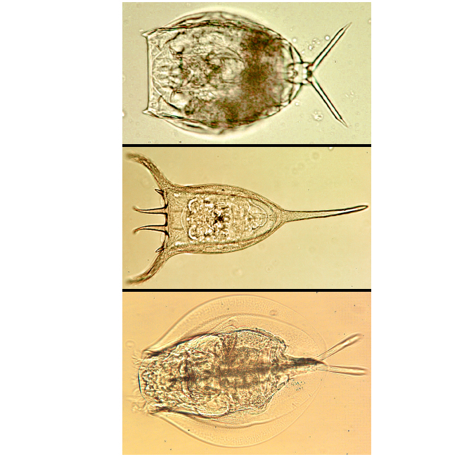
Each view is shown separately below.
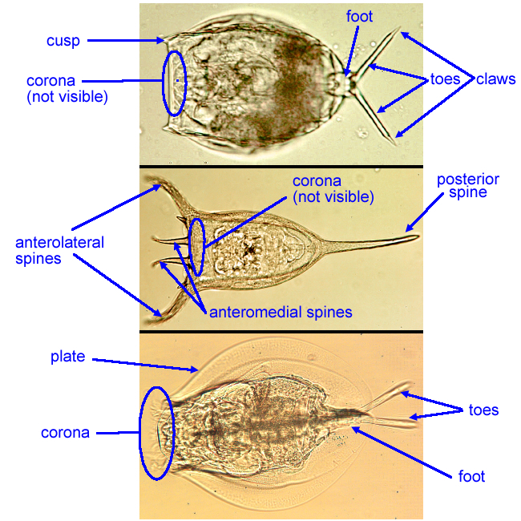
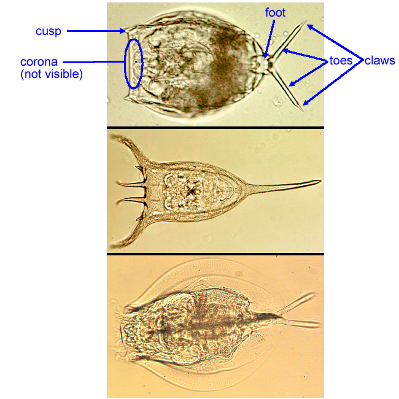
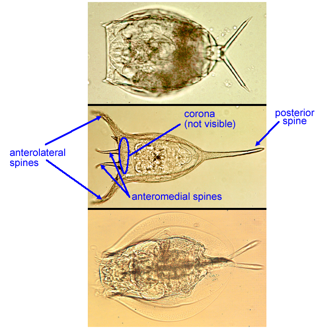
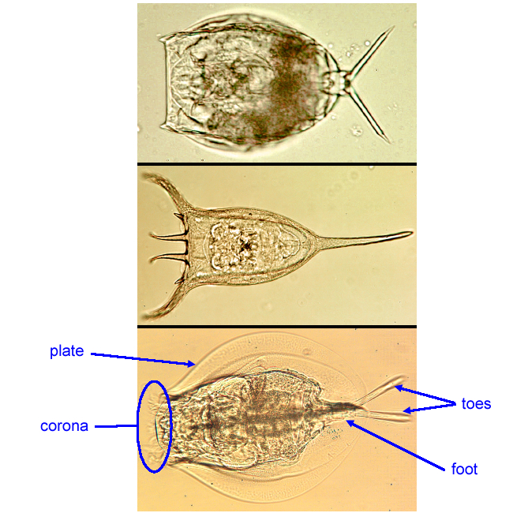
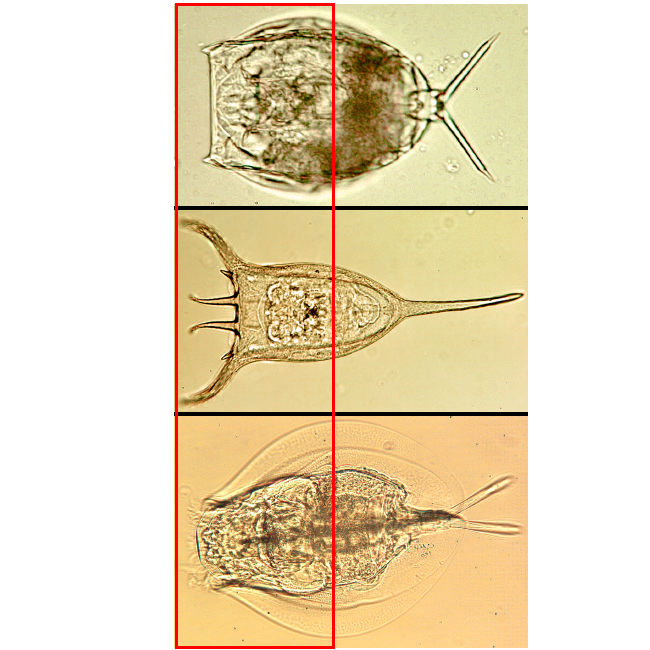
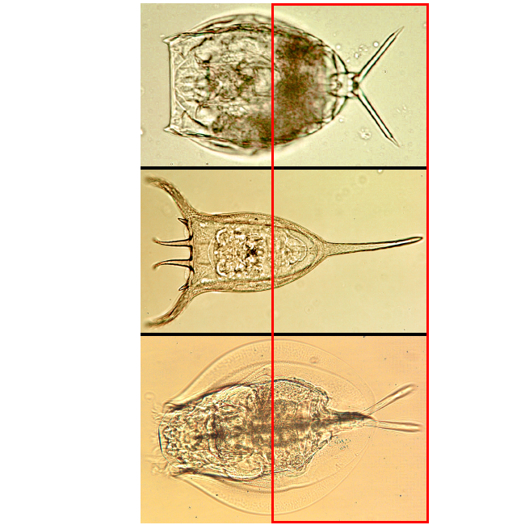
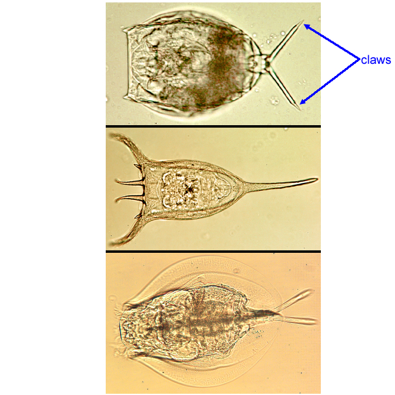
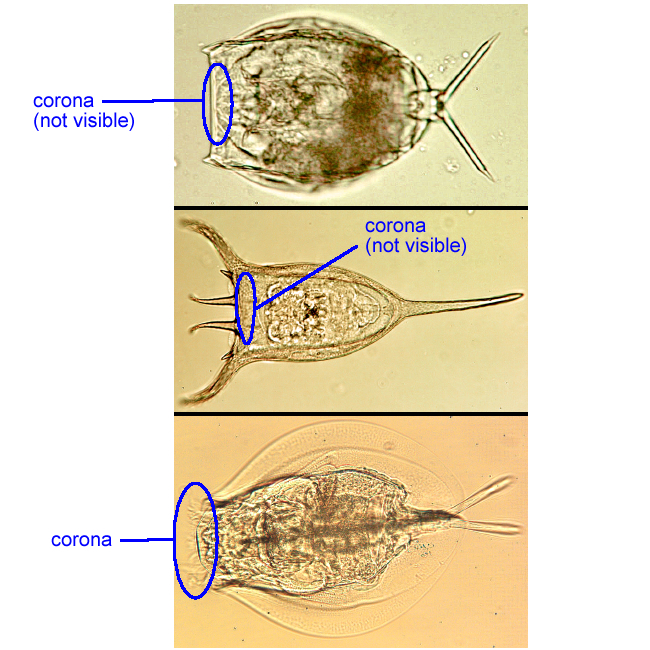
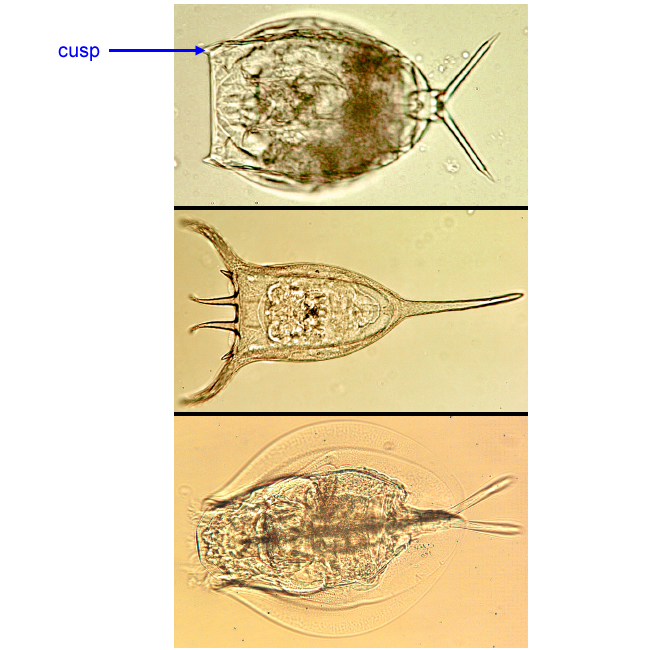
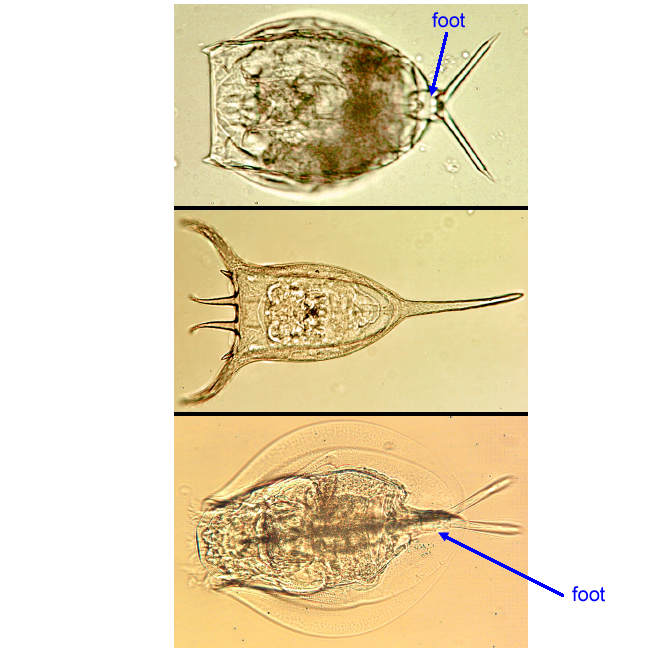
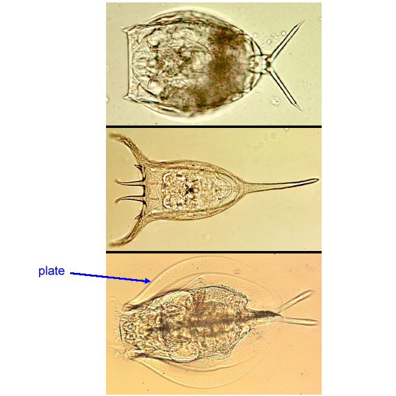
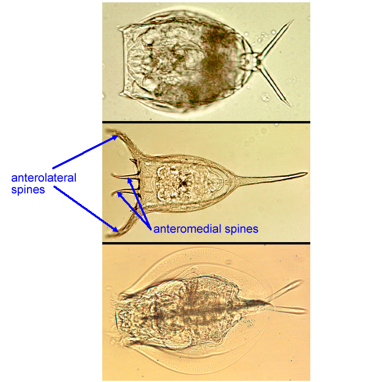
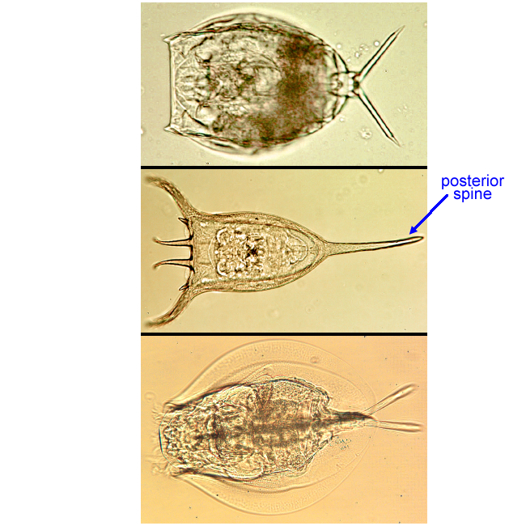
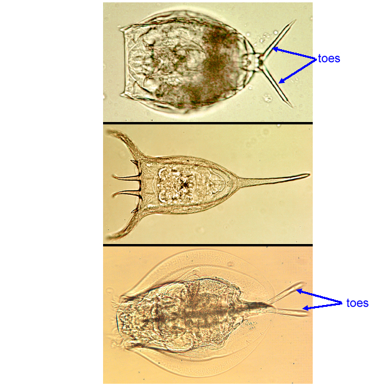
This site counts page views using GoatCounter, a service that uses no cookies and stores no personal information about visitors.